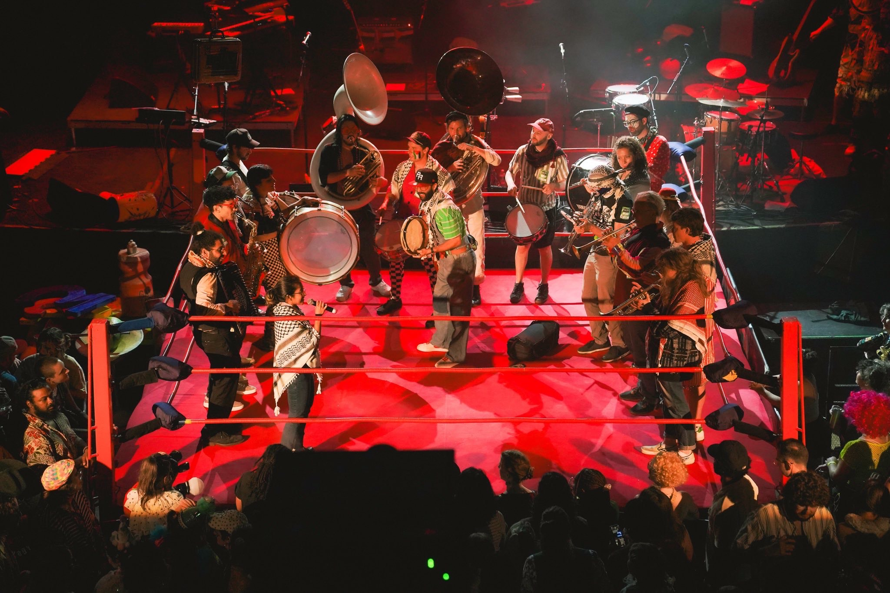
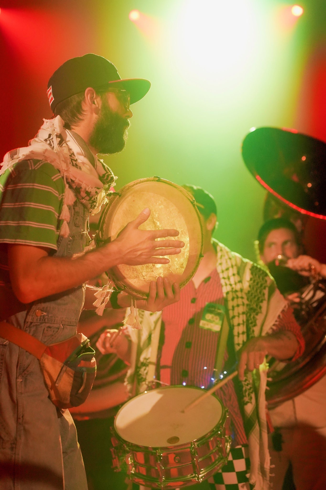
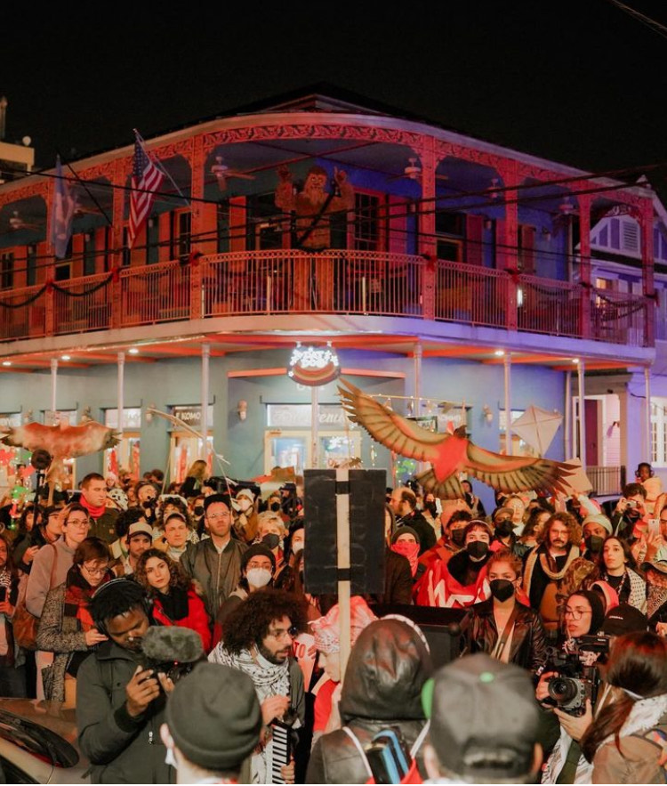

Members and Local Organizations
{% for member in site.data.members %}
{% if member.status == "member" %}
{% endif %}
{% endfor %}
NM4P is a group of New Orleans-based musicians dedicated to solidarity with the Palestinian people. We run a community brass band that performs Palestinian and Arabic music for local protests and actions. We organize our fellow musicians to bring Palestinian solidarity and culture into performance spaces and venues throughout the city, helping musicians and their audiences plug in to the movement for a free Palestine. We build cultural resistance by organizing workshops on Palestinian music and culture, and sharing resources such as sheet music, literature, and other materials to raise political consciousness among our peers and our community.
We aim to mobilize the support of our peers (musicians in New Orleans), a culturally significant group, for the Palestinian cause.

We hope to provide an avenue for musicians to use our collective voice to speak out against apartheid, genocide, racism, fascism, and imperialism, in support of the Palestinian struggle and the many other struggles that are connected at its core. We envision a music scene that is loud and explicit about our values, that asserts Palestinian identity and our commitment to our principles, to our dignity, and to our demands for freedom. We embrace the use of music in the service of liberation.We aim to inspire people to join the movement and to channel our creative energy and the energy of our audiences towards local organizing efforts. We want to transform our gigs/workplaces (which are some of the most widespread and frequently visited gathering places in our city) into political spaces, where people can learn about Palestine and connect to current local organizing efforts. We envision a music scene whose members and audiences are part of those efforts, that encourages other communities and workplaces to do the same.

We strive to build consciousness in individuals by contextualizing Palestinian songs, making them personal and applying their meaning in the present. We want to make New Orleans a place where you can’t go to a show without feeling the support for Palestine.We also seek to energize protests and actions with music and rhythm, which we feel will strengthen the movement by demonstrating connectivity of struggles through the connectivity of music, uplifting Palestinian culture and the cultures of other groups oppressed by the same forces (white supremacy, colonialism, etc.).

We embrace the use of music as a means of community building and community care; as a tool for developing revolutionary consciousness and culture; as a way to make our movements more joyous and sustainable.We work to provide an alternative model for cultural expression and resistance which is founded in empowerment rather than consumption and takes into account the people whose music we are playing. We believe that merely consuming the cultures of oppressed people does not constitute an act of solidarity, if we are not also actively engaged in working for liberation. We reject the use of music for the purposes of co-optation and oppression. We reject the appropriation of the music of black, brown, indigenous, and colonized peoples by corporations and colonizers. We acknowledge that music and culture are fundamentally political.
We stand in solidarity knowing that for 76 years, the Palestinian people have resisted genocide and a suffocating apartheid system, which restricts people's movements, separating them from their fields, families, schools, and neighbors. They continue to be forced out of their ancestral lands and homes, unjustly imprisoned and brutally tortured. They face a relentlessly dehumanizing mass media campaign and companion military effort fully enabled by the United States’ military, financial, and diplomatic support.
We will not be idle as these atrocities continue. We recognize the power we have as musicians in New Orleans. We are not passive observers; we are active participants in shaping our city’s culture, and that of other places that look to New Orleans as a cultural beacon. As people of conscience and humans with hearts, as artists and musicians, we commit to using our visibility to broadcast our principles, to fight the normalization of the Zionist genocide and occupation, and to leverage what power we have to support all peoples of the world struggling for justice.